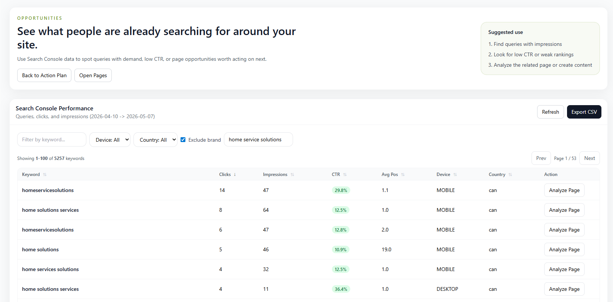
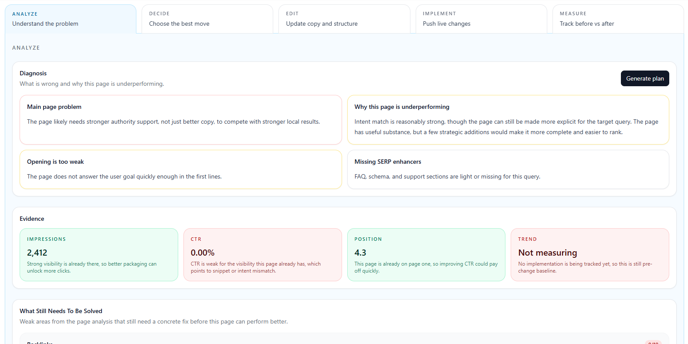

5,788
query-page rows analyzed
Featured Project
SEO AI &
Analytics Platform
A centralized AI-powered platform that transforms search data into actionable SEO tasks, content opportunities, and performance insights.

Impact at a glance
82
pages with opportunity
52
prioritized actions
65
AI visibility score
16
active SEO tasks
How it works
From data to execution
Search Data
Collect data from Google Search Console and GA4.
AI Analysis
Detect opportunities, gaps and intent with AI.
SEO Tasks
Generate prioritized tasks with impact scores.
Publish & Track
Implement on WordPress and measure results.
Dashboard overview
Performance, opportunities, tasks and AI visibility.

Prioritized recommendations based on impact, effort and confidence.

Explore queries with demand, low CTR or weak rankings.

Deep dive into the problem, evidence and recommended steps.

AI-powered analysis: diagnose, decide, edit, implement and measure.
Publish optimized content directly to WordPress with metadata.
Code highlight
Opportunity classification logic
function getOpportunityType({ query, impressions, clicks, ctr, position }) {
const hasDemand = impressions >= 100;
const lowCtr = hasDemand && ctr < 1;
const strikingDistance = position >= 8 && position <= 20;
const localIntent = includesServiceAndCity(query);
if (localIntent && hasDemand) return "local-page-opportunity";
if (strikingDistance) return "striking-distance";
if (lowCtr) return "low-ctr-improvement";
if (hasDemand && clicks === 0) return "content-gap";
return "monitor";
}Tech & Integrations